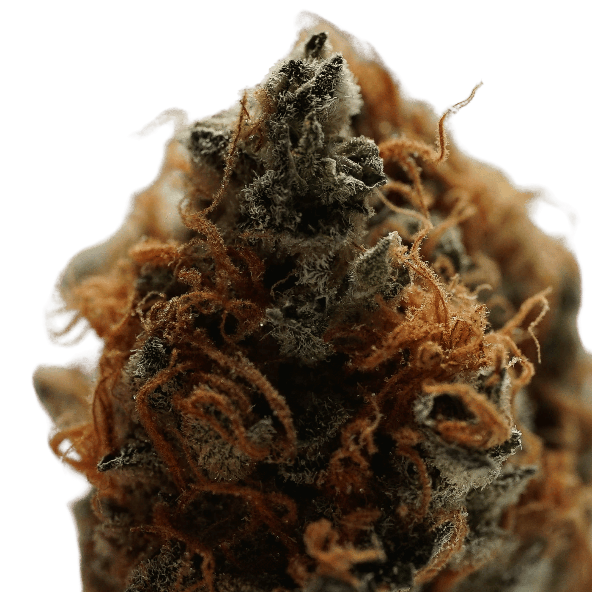
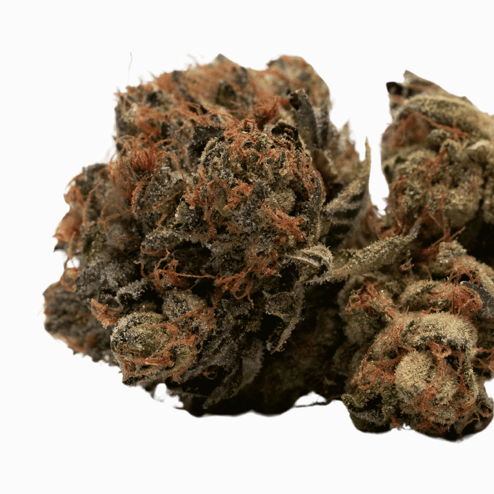
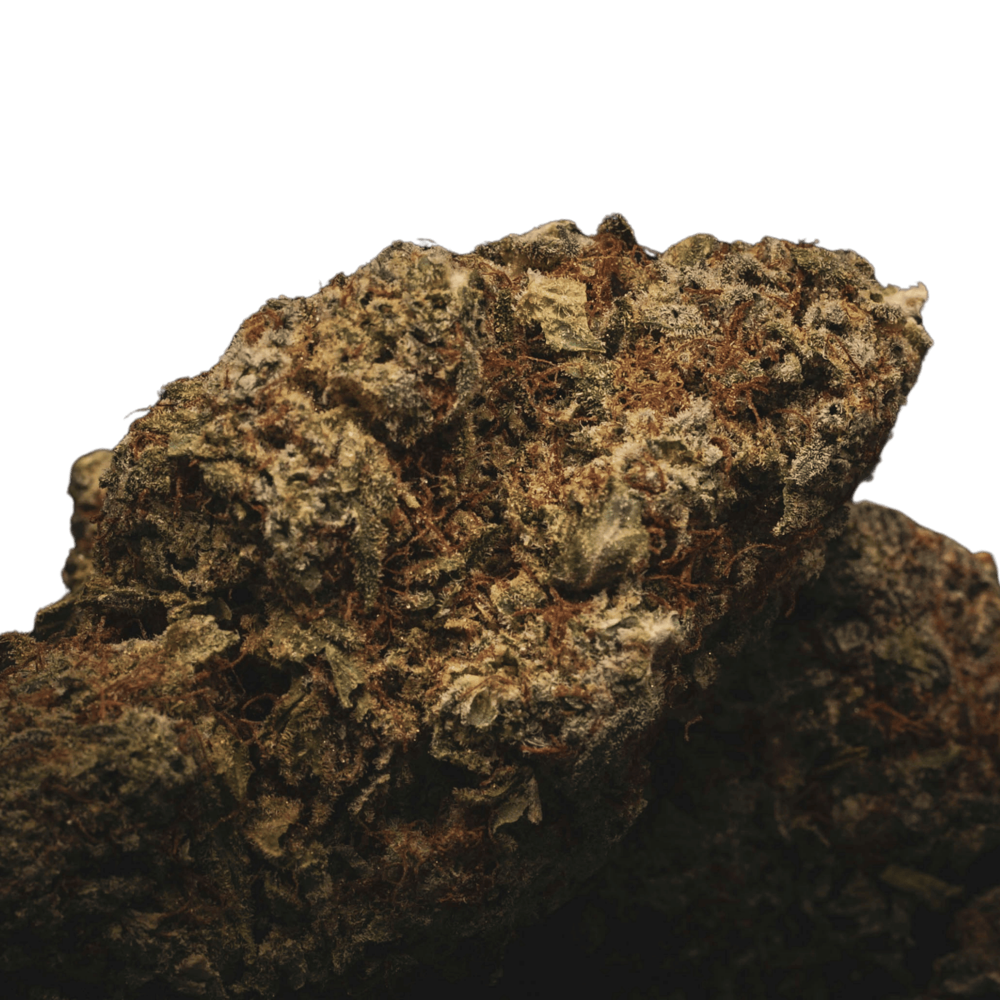

Explore the World of Cannabis: Education, Benefits, and Uses
Welcome to our website, your comprehensive resource for all things cannabis. Explore expert information on cannabis flowers, CBD, CBG, and more to make informed choices for your health and well-being.
Introduction to Cannabis
Cannabis is a versatile plant used for medicinal and recreational purposes. It contains cannabinoids like THC, which causes a high, and CBD, which offers therapeutic benefits without intoxication.
Cannabis can be consumed as flowers, oils, edibles, and topicals, helping with pain relief, anxiety reduction, and sleep improvement. Understanding its uses and benefits is essential as legalization grows.
Key benefits and uses of cannabis
Anxiety Reduction
Improved Sleep
Pain Relief
Seizure Control
We aim to be a comprehensive, reliable, and user-friendly resource for anyone interested in learning about cannabis, whether for health, wellness, or recreational purposes.
By providing accurate information, fostering community engagement, and staying updated with industry trends, we want to add significant value to you and the broader conversation about cannabis.
The History of the Magic Leaf
Cannabis use dates back to ancient China (5000 BCE) for fiber and medicine, spreading to India and the Middle East for religious and medicinal purposes. It was used in Greece and Rome for health treatments and documented by Islamic scholars. In Europe and colonial America, it was grown for hemp.
The 20th century saw prohibition, but revived interest during the 1960s. Recently, medical use gained acceptance, leading to broader legalization worldwide.
Insomnia
Cannabis flowers, especially Indica strains, are known for their sedative effects, helping individuals with insomnia achieve better sleep. They can shorten the time it takes to fall asleep and improve sleep quality, leading to more restful nights.
Benefits
Chronic Pain Relief
Cannabis flowers provide a natural alternative for chronic pain management. The cannabinoids interact with the body's endocannabinoid system to reduce pain signals and inflammation, offering relief without the side effects of traditional pain medications.
Depression
The mood-enhancing properties of cannabis flowers can help alleviate symptoms of depression. By boosting serotonin levels and promoting a feeling of well-being, cannabis can support mental health and improve overall mood.
Anxiety Reduction
Cannabis flowers, particularly strains high in CBD, can help reduce anxiety and stress. They promote relaxation and a sense of calm, making them useful for individuals with anxiety disorders or those seeking to unwind after a stressful day.
Nausea Relief
Cannabis flowers are effective in alleviating nausea and vomiting, particularly for chemotherapy patients. The anti-emetic properties of cannabinoids help patients manage these side effects and maintain a better quality of life.
Appetite
Known as the "munchies," cannabis flowers can stimulate appetite, beneficial for those with eating disorders or conditions that cause loss of appetite. This effect helps individuals maintain proper nutrition and body weight.
Cannabis in a nutshell
Cannabis use dates back to ancient China (5000 BCE) for fiber and medicine, spreading to India and the Middle East for religious and medicinal purposes. It was used in Greece and Rome for health treatments and documented by Islamic scholars. In Europe and colonial America, it was grown for hemp.
The 20th century saw prohibition, but revived interest during the 1960s. Recently, medical use gained acceptance, leading to broader legalization worldwide.
Types of Cannabis Strains
Indica
Known for its relaxing and sedative effects, Indica strains are often used for pain relief, insomnia, and anxiety reduction.
Sativa
Typically uplifting and energizing, Sativa strains are used to boost creativity, focus, and mood.
Hybrid
These strains combine elements of both Indica and Sativa, offering a balanced effect that can be tailored to specific needs.
Unwind with Indica, the strain that turns stress into serenity.
Elevate your energy and creativity with vibrant Sativa blooms.
Experience the best of both worlds with a balanced Hybrid blend.
Cannabis flowers are grown in optimal conditions, either outdoors with ample sunlight or indoors with controlled lighting and climate. After reaching maturity, the flowers are hand-harvested and then dried and cured to preserve their quality and potency. This careful process ensures the best possible product for use.
What
is
CBD?
CBD (cannabidiol) is a non-psychoactive compound found in cannabis plants.
Unlike THC, CBD does not produce a high, making it popular for its therapeutic benefits without intoxicating effects.
Products
Oils and Tinctures
Edibles
Topicals
Capsules and Pills
Vapes
Benefits and Uses
Pain Relief
CBD helps manage chronic pain by reducing inflammation and interacting with neurotransmitters.
Anxiety and Stress Reduction
CBD promotes relaxation and helps alleviate anxiety and stress without causing sedation.
Improved Sleep
By addressing anxiety and pain, CBD can improve sleep quality and help with insomnia.
Epilepsy and Seizure Disorders
CBD has been proven effective in reducing the frequency and severity of seizures, particularly in treatment-resistant epilepsy.
Neuroprotective Properties
CBD is being studied for its potential to protect against neurodegenerative diseases like Alzheimer's and Parkinson's.
WHAT IS CBG?
CBG (cannabigerol) is a non-psychoactive cannabinoid found in cannabis plants. Often referred to as the "mother of all cannabinoids," CBG is a precursor to other cannabinoids like CBD and THC.